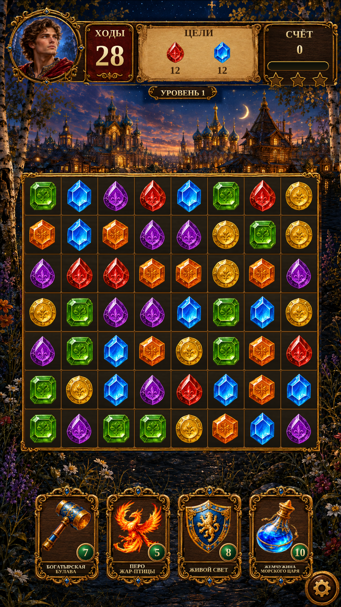

Gameplay · portrait scenery R9Gameplay · portrait scenery
R8 softened the join but retained the dark scenery patch shown in the user’s close-up. This revision replaces that entire dark area with continuous blue-violet twilight behind the trees. Portrait, header, booster cards and layout are unchanged.
Native views are actual Unity captures from isolated test saves. The specials view is a controlled fixture. 41 targeted Unity checks passed.
